Descarbonização da saúde respiratória
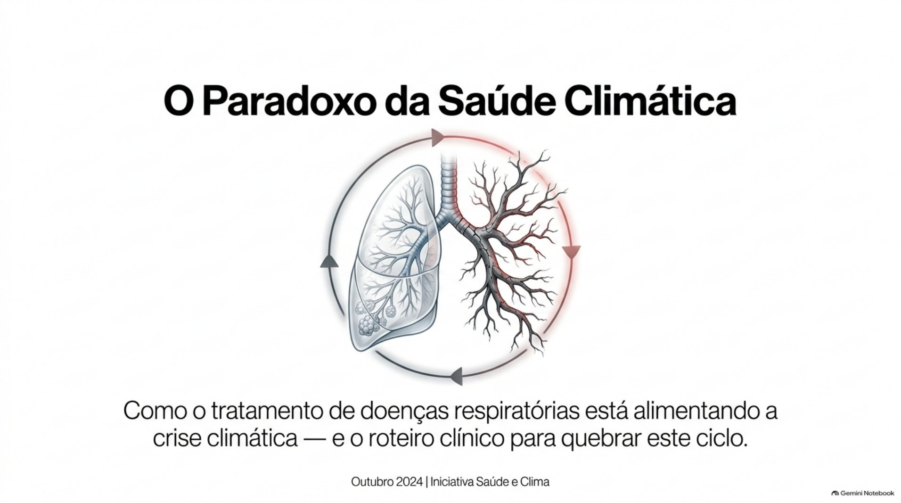
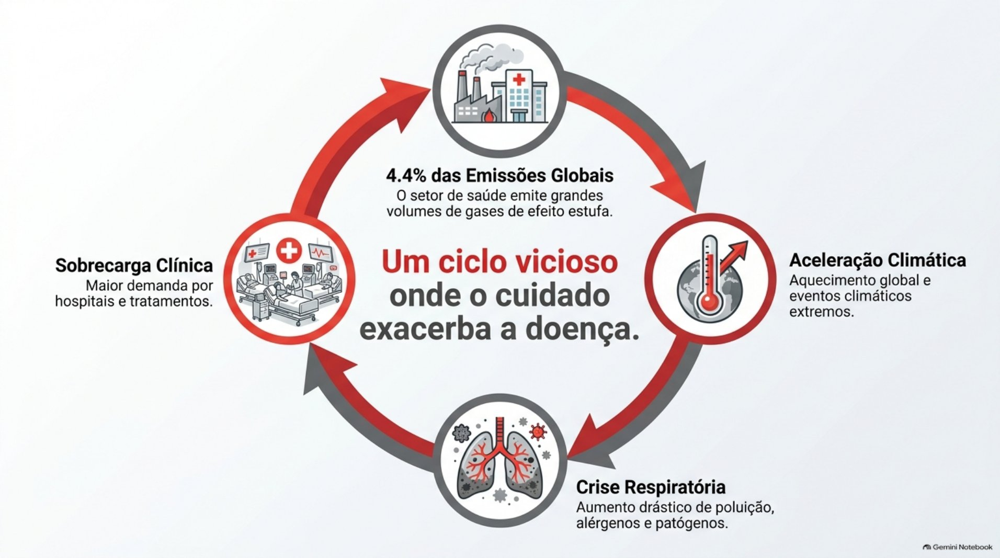
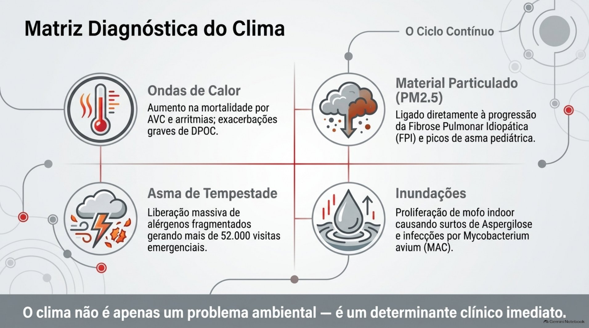
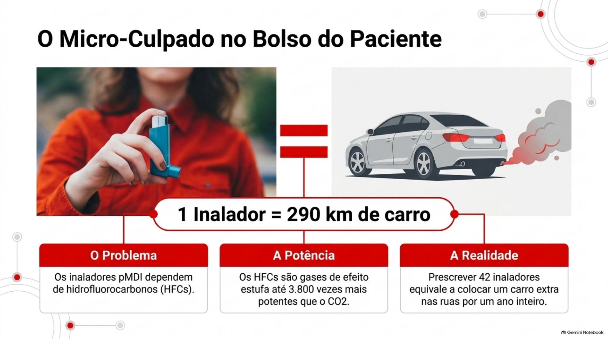
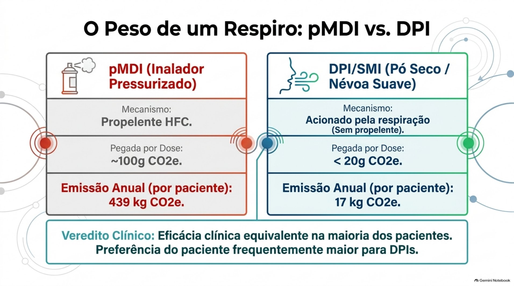
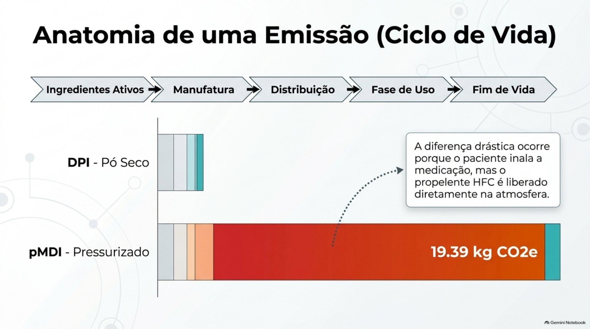
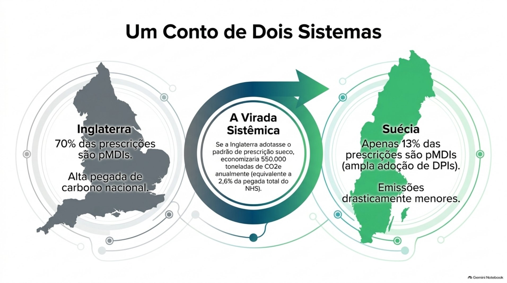
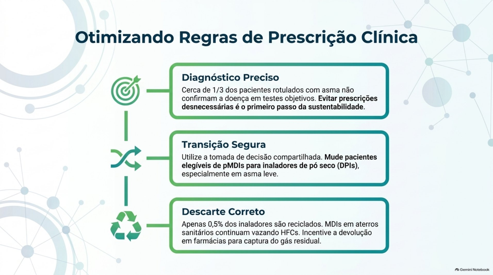
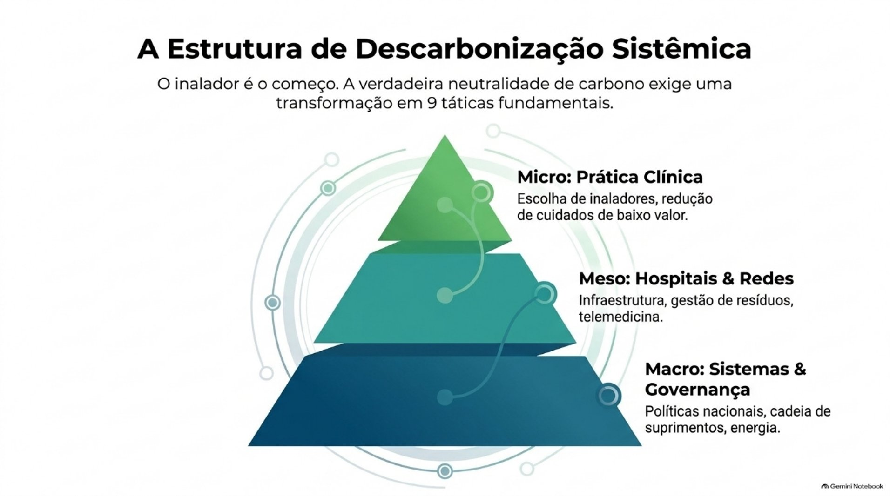
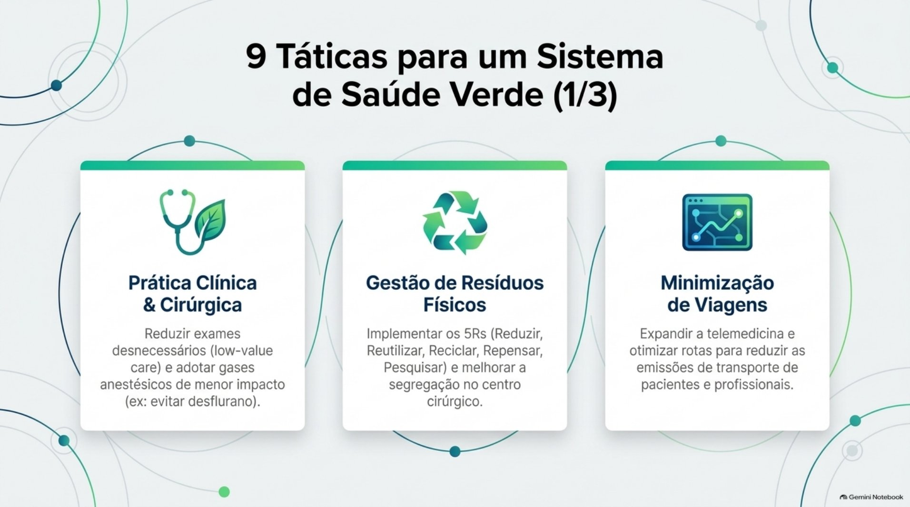
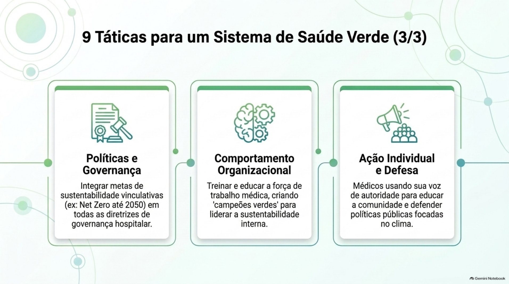
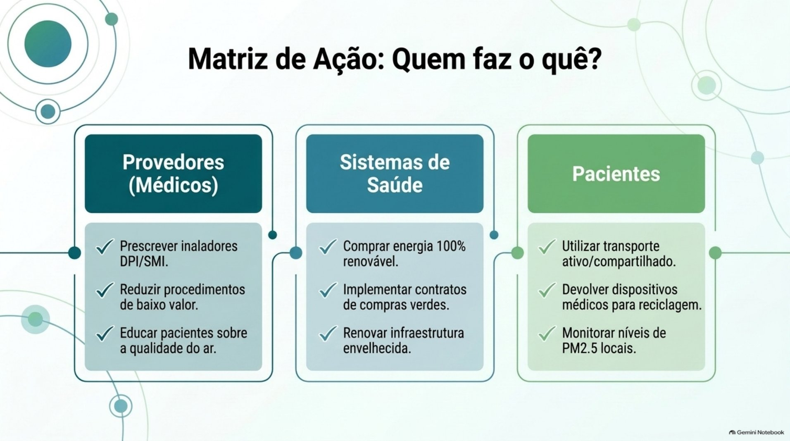
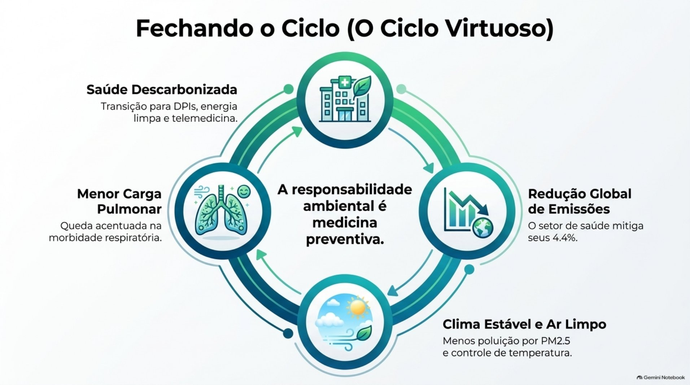
Ler o texto do infográfico
Slides
- O paradoxo da saúde climática
- Um ciclo vicioso: onde o cuidado exacerba a doença
- Matriz diagnóstica do clima
- O micro-culpado no bolso do paciente
- O peso de um respiro: pMDI x DPI
- Anatomia de uma emissão (ciclo de vida)
- Um conto de dois sistemas
- Otimizando regras de prescrição clínica
- A estrutura de descarbonização sistêmica
- 9 táticas para um sistema de saúde verde (1/3)
- 9 táticas para um sistema de saúde verde (2/3)
- 9 táticas para um sistema de saúde verde (3/3)
- Matriz de ação: quem faz o quê?
- Fechando o ciclo (o ciclo virtuoso)
- O voto médico